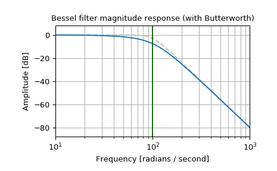
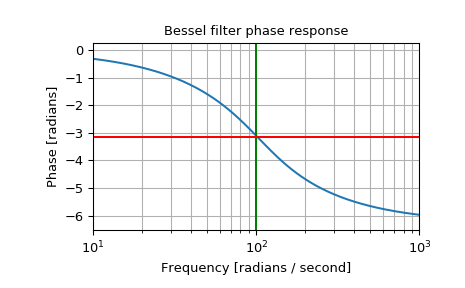
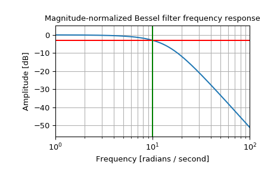
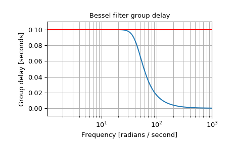

scipy.signal.bessel¶
-
scipy.signal.bessel(N, Wn, btype='low', analog=False, output='ba', norm='phase', fs=None)[source]¶ Bessel/Thomson digital and analog filter design.
Design an Nth-order digital or analog Bessel filter and return the filter coefficients.
- Parameters
- Nint
The order of the filter.
- Wnarray_like
A scalar or length-2 sequence giving the critical frequencies (defined by the norm parameter). For analog filters, Wn is an angular frequency (e.g., rad/s).
For digital filters, Wn are in the same units as fs. By default, fs is 2 half-cycles/sample, so these are normalized from 0 to 1, where 1 is the Nyquist frequency. (Wn is thus in half-cycles / sample.)
- btype{‘lowpass’, ‘highpass’, ‘bandpass’, ‘bandstop’}, optional
The type of filter. Default is ‘lowpass’.
- analogbool, optional
When True, return an analog filter, otherwise a digital filter is returned. (See Notes.)
- output{‘ba’, ‘zpk’, ‘sos’}, optional
Type of output: numerator/denominator (‘ba’), pole-zero (‘zpk’), or second-order sections (‘sos’). Default is ‘ba’.
- norm{‘phase’, ‘delay’, ‘mag’}, optional
Critical frequency normalization:
phaseThe filter is normalized such that the phase response reaches its midpoint at angular (e.g. rad/s) frequency Wn. This happens for both low-pass and high-pass filters, so this is the “phase-matched” case.
The magnitude response asymptotes are the same as a Butterworth filter of the same order with a cutoff of Wn.
This is the default, and matches MATLAB’s implementation.
delayThe filter is normalized such that the group delay in the passband is 1/Wn (e.g., seconds). This is the “natural” type obtained by solving Bessel polynomials.
magThe filter is normalized such that the gain magnitude is -3 dB at angular frequency Wn.
New in version 0.18.0.
- fsfloat, optional
The sampling frequency of the digital system.
New in version 1.2.0.
- Returns
- b, andarray, ndarray
Numerator (b) and denominator (a) polynomials of the IIR filter. Only returned if
output='ba'.- z, p, kndarray, ndarray, float
Zeros, poles, and system gain of the IIR filter transfer function. Only returned if
output='zpk'.- sosndarray
Second-order sections representation of the IIR filter. Only returned if
output=='sos'.
Notes
Also known as a Thomson filter, the analog Bessel filter has maximally flat group delay and maximally linear phase response, with very little ringing in the step response. [1]
The Bessel is inherently an analog filter. This function generates digital Bessel filters using the bilinear transform, which does not preserve the phase response of the analog filter. As such, it is only approximately correct at frequencies below about fs/4. To get maximally-flat group delay at higher frequencies, the analog Bessel filter must be transformed using phase-preserving techniques.
See
besselapfor implementation details and references.The
'sos'output parameter was added in 0.16.0.References
- 1
Thomson, W.E., “Delay Networks having Maximally Flat Frequency Characteristics”, Proceedings of the Institution of Electrical Engineers, Part III, November 1949, Vol. 96, No. 44, pp. 487-490.
Examples
Plot the phase-normalized frequency response, showing the relationship to the Butterworth’s cutoff frequency (green):
>>> from scipy import signal >>> import matplotlib.pyplot as plt
>>> b, a = signal.butter(4, 100, 'low', analog=True) >>> w, h = signal.freqs(b, a) >>> plt.semilogx(w, 20 * np.log10(np.abs(h)), color='silver', ls='dashed') >>> b, a = signal.bessel(4, 100, 'low', analog=True, norm='phase') >>> w, h = signal.freqs(b, a) >>> plt.semilogx(w, 20 * np.log10(np.abs(h))) >>> plt.title('Bessel filter magnitude response (with Butterworth)') >>> plt.xlabel('Frequency [radians / second]') >>> plt.ylabel('Amplitude [dB]') >>> plt.margins(0, 0.1) >>> plt.grid(which='both', axis='both') >>> plt.axvline(100, color='green') # cutoff frequency >>> plt.show()
and the phase midpoint:
>>> plt.figure() >>> plt.semilogx(w, np.unwrap(np.angle(h))) >>> plt.axvline(100, color='green') # cutoff frequency >>> plt.axhline(-np.pi, color='red') # phase midpoint >>> plt.title('Bessel filter phase response') >>> plt.xlabel('Frequency [radians / second]') >>> plt.ylabel('Phase [radians]') >>> plt.margins(0, 0.1) >>> plt.grid(which='both', axis='both') >>> plt.show()
Plot the magnitude-normalized frequency response, showing the -3 dB cutoff:
>>> b, a = signal.bessel(3, 10, 'low', analog=True, norm='mag') >>> w, h = signal.freqs(b, a) >>> plt.semilogx(w, 20 * np.log10(np.abs(h))) >>> plt.axhline(-3, color='red') # -3 dB magnitude >>> plt.axvline(10, color='green') # cutoff frequency >>> plt.title('Magnitude-normalized Bessel filter frequency response') >>> plt.xlabel('Frequency [radians / second]') >>> plt.ylabel('Amplitude [dB]') >>> plt.margins(0, 0.1) >>> plt.grid(which='both', axis='both') >>> plt.show()
Plot the delay-normalized filter, showing the maximally-flat group delay at 0.1 seconds:
>>> b, a = signal.bessel(5, 1/0.1, 'low', analog=True, norm='delay') >>> w, h = signal.freqs(b, a) >>> plt.figure() >>> plt.semilogx(w[1:], -np.diff(np.unwrap(np.angle(h)))/np.diff(w)) >>> plt.axhline(0.1, color='red') # 0.1 seconds group delay >>> plt.title('Bessel filter group delay') >>> plt.xlabel('Frequency [radians / second]') >>> plt.ylabel('Group delay [seconds]') >>> plt.margins(0, 0.1) >>> plt.grid(which='both', axis='both') >>> plt.show()
